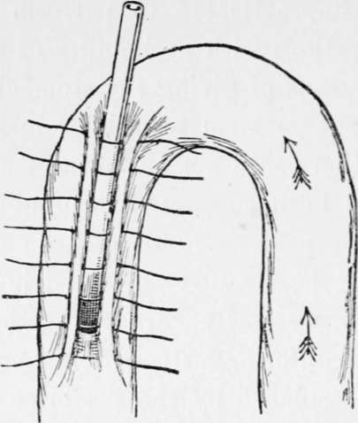
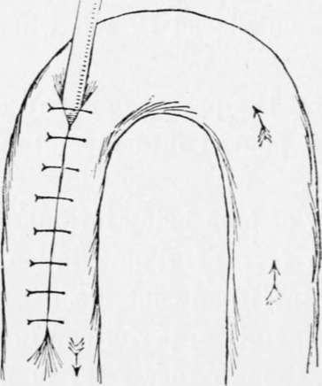
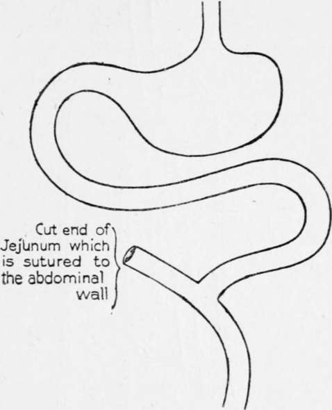
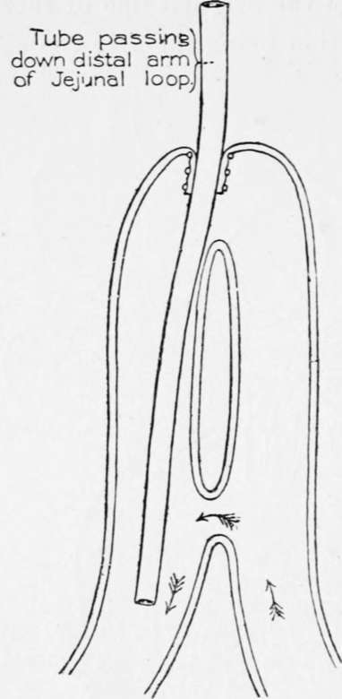

Jejunostomy Operation
Description
This section is from the book "Cancer Of The Stomach", by A. W. Mayo Robson, D.Sc, F.R.C.S.. Also available from Amazon: Cancer of the Stomach.
Jejunostomy Operation
For any operation to be a success the bowel must be so placed that it will serve the two purposes :
(1) To permit the passage onward of the bile and pancreatic fluid poured into the intestine above the artificial fistula.
(2) To allow of food being introduced through the fistula without fear of regurgitation, either of the food or of the intestinal contents.
In my first operation, performed in 1891, I used a method which, though successful in prolonging life, was inconvenient and cumbersome, and I need not mention it further. The operations now used are :
(1) A modification of WitzeFs method of gastrostomy, in which a No. 12 rubber catheter is stitched into an opening in the jejunum, and afterwards the catheter is buried in a groov e in the bowel for a distance of about 2 in., the line of suture being fixed to the abdominal wall (see Figs. 29 and 30).
Fig. 29.-A method of performing jejunostomy by a modification of Witzel's operation for gastrostomy. First stage.
Fig. 30.-Second stage of Fig. 29.
(2) Maydl's method of dividing the jejunum, implanting the proximal cut end into the distal portion a few inches from the original line of section, the open end of this section being fixed to the skin (Fig. 31).
Fig. 31.-Jejuuostomy by Maydl's method. These three figures are from pages 234 and 235, vol. lxxxviii, Med.-Chir. Trans.
(3) Mayo-Robson's method. It consists in taking a loop of the beginning of the jejunum just sufficiently long to reach the surface without tension j the two arms of the loop are short-circuited about 3 or 4 in. from the surface, the short-circuiting being done either by means of sutures around a decalcified bone bobbin or by sutures alone ; personally I prefer the former. A small incision is then made into the top of t-he loop, just large enough to admit a No. 12 Jacques catheter, which is inserted and passed for 3 in. down the distal arm of the loop ; this is fixed to the margins of the incision in the gut by a silk or Pagenstecher's suture, and the entrance of the tube into the bowel further guarded by two purse-string sutures, one over the other. The top of loop is fixed to the skin by one or two stitches and the wound closed. The patient can then be fed at once with some peptonised milk and brandy. The whole operation can be done in from fifteen to twenty minutes, and with very little visceral exposure.
Fig. 32.-Jejunostomy by the author's method now described. This figure is from page 236, vol. lxxxviii, Med.-Chir. Trans.
Should the patient be too ill to bear the little extra time occupied by the short-circuiting, the tube may be inserted as directed, and surrounded by two or three purse-string sutures, a proceeding which can be accomplished in a few minutes. In this case the loop of bowel must not be brought to the skin, but had better be fixed by sutures to the peritoneal margin and the aponeurosis, in order to leave part of the lumen of the attached loop within the abdomen for the direct passage onwards of the intestinal fluid with the bile and pancreatic secretion.
The following case affords an example of the relief that may follow this operation :
Mrs. -, aged forty-six years, the wife of a sea captain, was sent to see me on April 8th, 1904, when she was suffering great pain, which came on at frequent intervals, and she was vomiting' five or six times a day-in fact, whenever she took food it was shortly vomited, the vomit being at times coffee-ground in character. A tumour in the epigastrium about the size of a large flat orange could be readily felt, and at short intervals the whole stomach became hard and rigid. No enlarged glands could bo felt in the groin or above the clavicle. There was no tenderness on pressure, and the hard, nodular tumour was suggestive of cancer. Though she gave a history of indigestion and loss of health for eight years or even longer, the acute symptoms had only existed for six months.
On April 13th the abdomen was opened by a vertical incision through the inner margin of the right rectus, when the stomach was found to be involved in cancer from end to end. As the glands along the lesser curvature were involved, and secondary growth could be felt passing up through the opening in the diaphragm, and a number of enlarged glands could be seen in the great omentum, it was clearly impossible to perform gastrectomy and impracticable to do a gastroenterostomy. A loop of jejunum was, therefore, brought up and short-circuited by suture over a decalcified bone bobbin and a No. 12 Jacques catheter was inserted as just described. The wound was rapidly closed and the patient was put to bed in good condition, the whole operation only having occupied half an hour or less. A meal of peptonised milk was given at once and repeated every two hours. From the time of operation the vomiting ceased, and she completely lost her pain. Fifteen days after operation she was able to take a little food by the mouth, though the feeding was chiefly by the tube.
She was free from pain and the tumour was less. She returned home on the nineteenth day, having gained flesh and strength. Six months later I had a letter saying that she was able to get about and could take plenty of food, partly by the mouth and partly through the tube. She had gained considerably in weight, though the gastric tumour could still be felt. The patient survived for twelve months, ten or eleven of which were passed in comfort. Her death was due to secondary growths in the abdomen.
Continue to:
Tags
stomach, operation, cancer, tumour, ulcer, gastric, gastrectomy